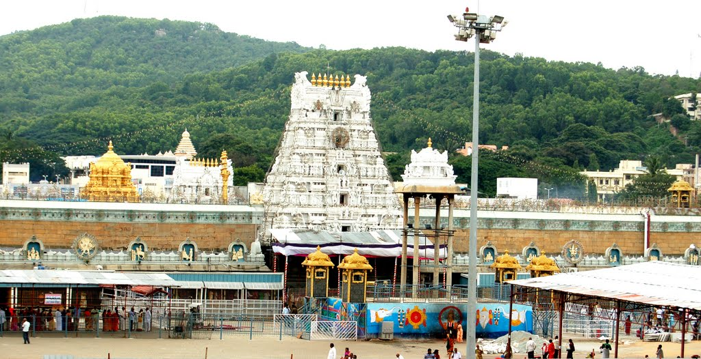
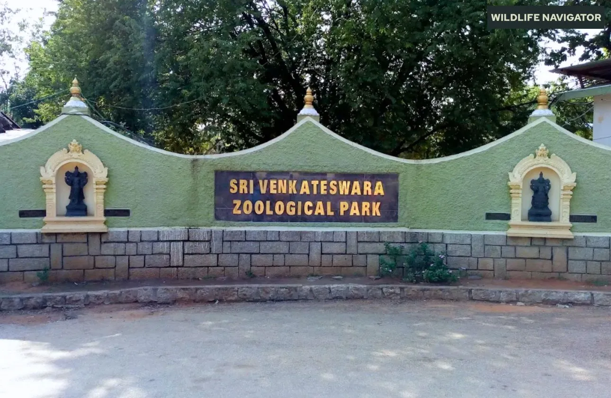
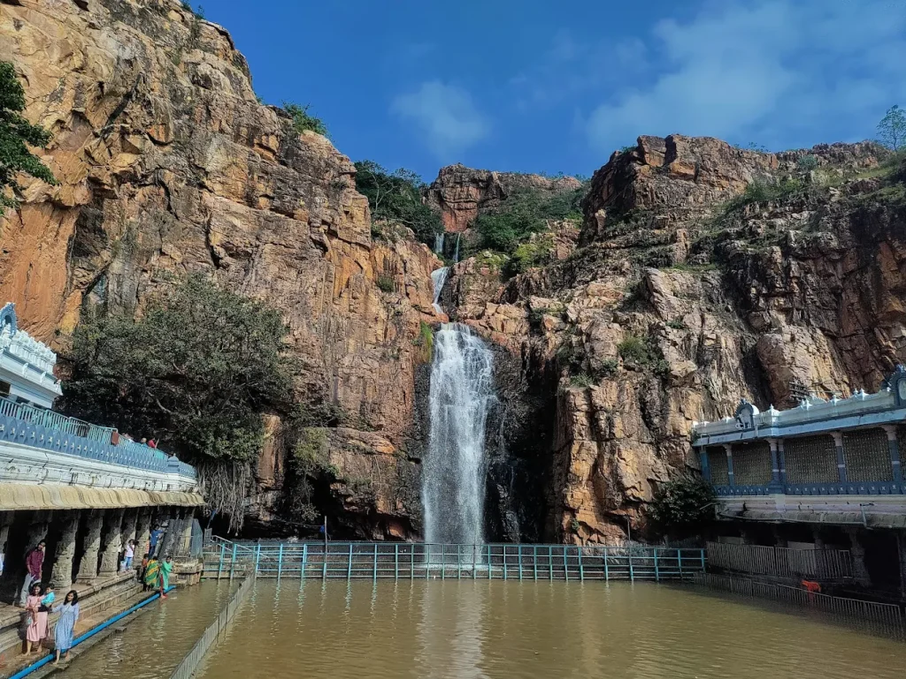
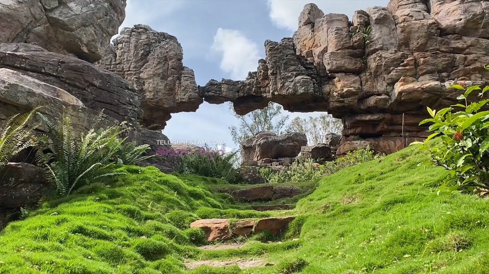
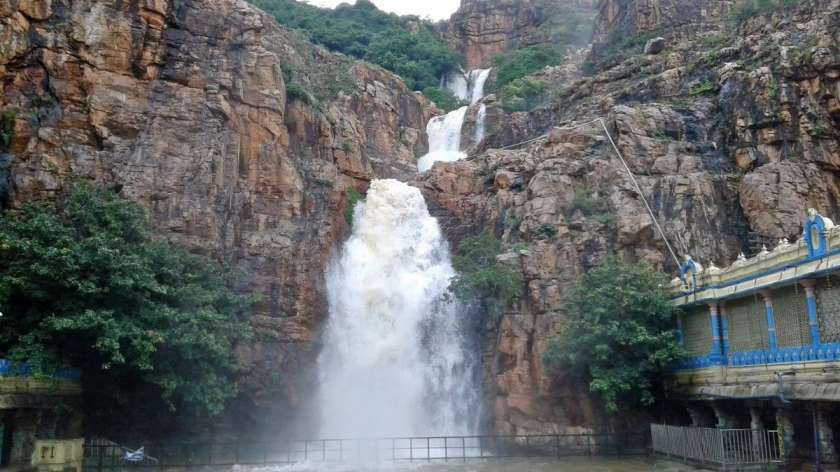

01

TIRUPATI
Tirumala Venkateswara Temple
Visit the world-famous hilltop temple dedicated to Lord Venkateswara and experience its spiritual atmosphere.
Discover the famous temples, sacred hills and beautiful attractions around Tirupati.
Book Your Tirupati Trip →Plan your Tirupati sightseeing trip with Jaihind Cabs.

Visit the world-famous hilltop temple dedicated to Lord Venkateswara and experience its spiritual atmosphere.

Explore this historic Shiva temple, known for its ancient architecture and spiritual significance.

Visit this peaceful temple and waterfall attraction located at the foothills of Tirumala.

Visit this remarkable natural rock formation near Tirumala, known for its unique arch-like shape and geological beauty.

Discover the historic fort, palace ruins and heritage of the former Vijayanagara-era region.
Book a comfortable cab for your Tirupati sightseeing journey.